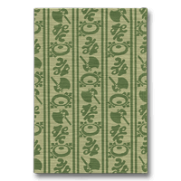

Books for Becoming Better Acquainted with Otowaya
Index > Onoe Baiko VII, Ume to Kiku (Plums and Chrysanthemums)
Onoe Baiko VII, Ume to Kiku (Plums and Chrysanthemums)
Nihon Keizai Shimbun Sha, 1979Conveying the Impression of a Man of Sincerity and Grace
This book vividly conveys the warm and endearing personality of Onoe Baiko VII, who, along with Nakamura Utaemon VI, was one of the two great onnagata performers of female roles during the Showa era.
The first half of the book focuses on his early years following his adoption soon after birth by Kikugoro VI, who had not been favoured with children of his own. He discusses the training he began at the age of five, how he became aware of the secrets underlying his birth, and of how he was frequently tormented by his inability to discuss this matter with his parents. 'I was by nature shy and reserved in the first place, but this experience made me even more inward-looking, and as soon as something untoward happened, I would immediately shut myself up in my room.' Baiko fully conveys the personal worries and concerns that he felt while being brought up as a specially favoured son in a celebrated Kabuki lineage.
After the death of Kikugoro VI, he became head of the Kikugoro troupe, which was now based on a system of communal instruction. While depicting the trials and tribulations that beset him in the chaos of the immediate post-war period, he never complains or attempts to set himself up on a pedestal. He writes in a natural and unemotional manner about his appearances mainly in the theatre but also in the cinema and about his visit to America, where he gave instruction in Kabuki performance. We gain a good impression of Baiko's circumspect attitude to teaching. He reckoned that American actors would do best to begin with dance, and he writes about his experience teaching Fujimusume to would-be onnagata and Matsu no Midori to tachiyaku male lead actors, as well as his instruction in the play Narukami, one of the Juhachiban, or 'Eighteen Best Plays' played by the Ichikawa family since the days of Danjuro I.
In the chapter entitled 'My Favourite Roles', he provides a commentary on onnagata roles such as that of Tamate Gozen in the sewamono play Sesshu Gappo ga Tsuji (Gappo and His Daughters) and on the roles of Yoshitsune in Kanjincho and Shunkyo Kagami-jishi. He never allows himself to indulge in hairsplitting, but refers constantly to what it feels like as an actor actually being on the stage.
In the final chapter, entitled 'Memories of Great Actors and Precursors', he sets down his invaluable memories of great actors whose names occupy a firm place in history. They include those in his immediate lineage such as Baiko VI and Bando Hikosaburo VI as well as Ichimura Uzaemon XV, Nakamura Kichiemon I, Ichikawa Sadanji II and Ichikawa Chusha VII.
The book ends with a detailed chronology.
| ↑ TOP |
Copyright © Otowaya All Rights Reserved.